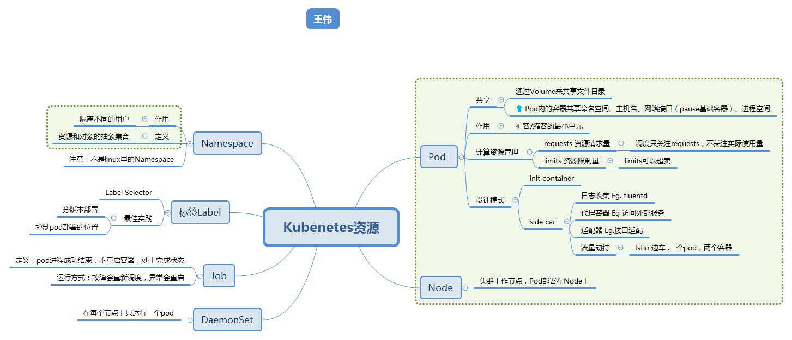

Workload #

Basic #
Config #
| 类型 | 用途 | 使用方式 | 安全 |
|---|---|---|---|
| ConfigMap | 普通配置 | 环境变量 文件挂载（卷 Volume）[7] |
纯文本 |
| Secret | 敏感数据 | 环境变量 文件挂载 |
Base64 |
Core #
Service #
Volume #
limit 限制 #
- NetworkPolicy 网络隔离与互通
- Resource Quota 资源限制
- SecurityContext 安全策略
other #
参考 #
- 《Kubenetes in Action》 七牛容器云团队
- 资源对象 feisky ***
- 面向 Kubernetes 编程： Kubernetes 是下一代操作系统 ***
- 第4 章 ： 理解 Pod 和容器设计模式 阿里
- 第3 章 ： Kubernetes 核心概念 阿里
- 第5 章 ： 应用编排与管理：核心原理 阿里
- K8s 中 ConfigMap 使用介绍
- 详解 Kubernetes Pod 的实现原理 未
%accordion%附: ConfigMap 使用%accordion%
apiVersion: v1
kind: Pod
metadata:
name: zhangsan
spec:
containers:
- name: zhangsan
image: busybox:1.28.4
imagePullPolicy: IfNotPresent
command: ['/bin/sh','-c','env']
env: # 配置环境变量
- name: HostName # 变量名
valueFrom:
configMapKeyRef:
name: cm-01 # ConfigMap 名称 (要和上面对应)
key: hostname # ConfigMap 里边的 Key (要和上面对应)
- name: Password
valueFrom:
configMapKeyRef:
name: cm-01
key: password
restartPolicy: Never # 当容器退出后. 不会进行重启操作
%/accordion%